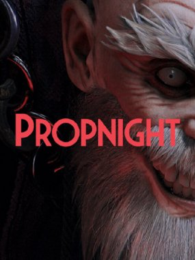
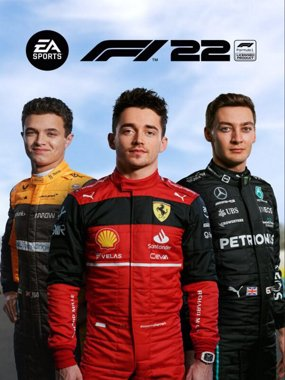
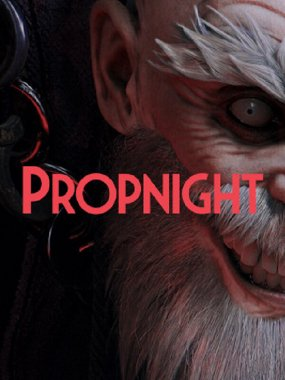
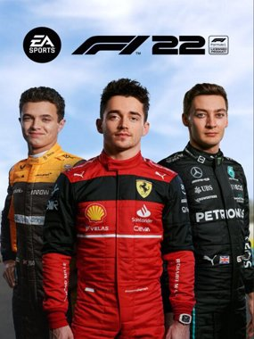
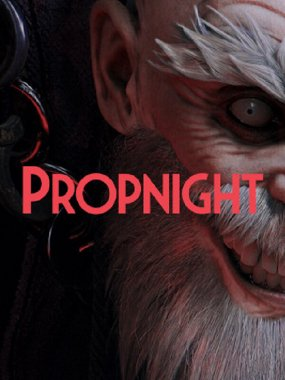
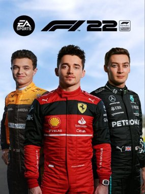
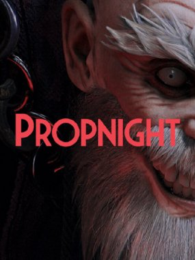
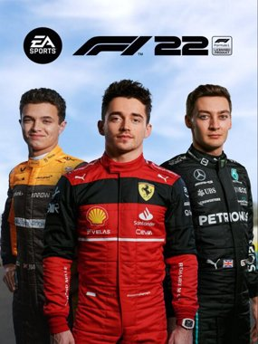

Últimas novidades


 



 



DayZ é um bom jogo para aqueles que procuram uma experiência desafiadora de sobrevivência e estão dispostos a investir tempo e esforço para progredir no jogo. No entanto, os bugs e glitches do jogo, bem como a sua curva de aprendizagem acentuada, podem ser barreiras significativas para alguns jogadores.

Counter Strike: Global Offensive é um excelente jogo para aqueles que procuram uma experiência competitiva de tiro em primeira pessoa. Com uma grande variedade de mapas, modos de jogo e armas disponíveis. No entanto, a sua comunidade às vezes pode ser tóxica e hostil, o que pode tornar a jogabilidade menos agradável para alguns jogadores.
Overwatch 2 é um excelente jogo para aqueles que procuram uma experiência de tiro em equipe baseada em habilidades. Com uma grande variedade de personagens, cada um com habilidades únicas, o Overwatch 2 oferece uma jogabilidade dinâmica e emocionante. O jogo também oferece uma campanha PvE. No entanto, a comunidade pode ser tóxica e hostil em algumas situações, o que pode tornar a experiência menos agradável para alguns jogadores.
Propnight é um jogo divertido e único para aqueles que procuram uma experiência diferente de jogo multiplayer. Propnight coloca os jogadores em dois papéis diferentes - os Caçadores e os Props. Os Props escondem-se dos Caçadores, enquanto os Caçadores tentam encontrar e eliminar todos os Props antes do tempo acabar. No entanto, a sua comunidade às vezes pode ser tóxica, o que pode tornar a jogabilidade menos agradável para alguns jogadores.
F1 2022 é um excelente jogo para aqueles que procuram uma experiência autêntica de corrida de Fórmula 1. O jogo oferece uma jogabilidade realista, com gráficos impressionantes, efeitos sonoros autênticos e uma grande variedade de pistas de corrida famosas. No entanto, o jogo necessita de uma volante para a melhor experiência possível. Tornando-o inacessível a vários jogadores.
A comunidade é tóxica e hostil a qualquer momento do jogo, de tal modo que é conhecida por toda a comunidade de jogadores. No entanto, é um excelente jogo para os jogadores que procuram um experiência competitiva e estratégica de jogo multiplayer online, ou os jogadores que podem querer se divertir com amigos em equipas de 5.